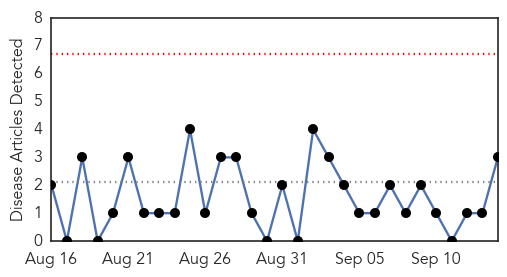
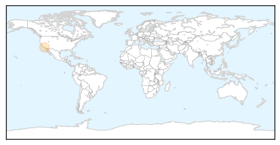
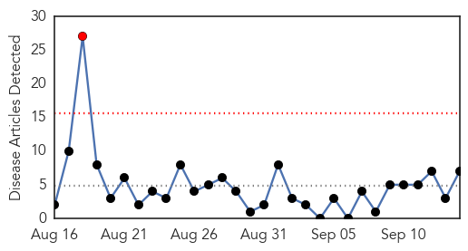
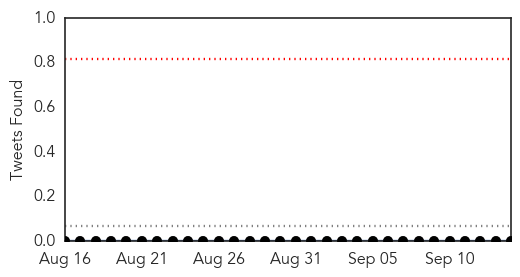
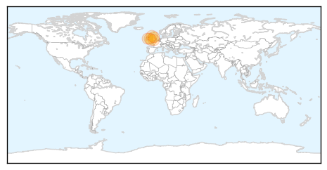

Pertussis
30-Day Web Trend
0 alerts, 0 warnings

30-Day Twitter Trend
0 alerts, 0 warnings

Article Locations
Article Confidences
Top Articles:
Top Tweets:
-
No tweets found for Sep 14, 2015
Meningitis
30-Day Web Trend
1 alerts, 0 warnings

30-Day Twitter Trend
0 alerts, 0 warnings

Article Locations
Article Confidences

Top Articles:
- 0.910
- Mother warns of the dangers of meningitis
- 0.837
- Health: ‘First year Leeds students beware of MenW and listen to vaccine warning’
- 0.767
- Clare family promote public awareness of meningitis
- 0.718
- Braunton family calls for North Devon to vaccinate children against Meningitis
- 0.682
- Meningitis warning for students heading to university
- 0.672
- Mother of meningitis B victim pleads for vaccine
- 0.626
- Fife mother urging parents to take up meningitis B vaccine after son’s scare
Top Tweets:
-
No tweets found for Sep 14, 2015